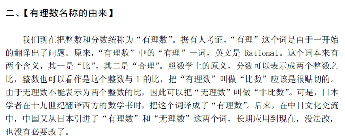

- UID
- 16
- 帖子
- 590
|
1#
 发表于 2013-1-13 09:35
发表于 2013-1-13 09:35
[数论] (网络上收集)无理数的一些小而精巧的证明
本帖最后由 realnumber 于 2013-1-13 23:48 编辑
1.$\sqrt{2}$是无理数,数学科普类读物一般有,比如<数学是什么>柯朗,新浪爱问上免费下.
证明:假设$\sqrt{2}$是有理数,那么有$\sqrt{2}=\frac{m}{n}$,其中$m,n\in{Z}$,$m,n$互素,ps,用记号$(m,n)=1$表示.
可得$2n^2=m^2$,所以$m^2$为偶数,那么$m$也为偶数.令$m=2k,k\in{Z}$,那么有$n^2=2k^2$,可得$n$也是偶数,与$(m,n)=1$矛盾.
所以$\sqrt{2}$不是有理数,即为无理数.
这样的练习$\sqrt6,2^\frac{1}{3}$是无理数,你也会证明了吧.
2.$\log_{10}2$是无理数,<数论导引>的一个简单习题.
证明:假设$\log_{10}2=\frac{m}{n}$,其中$m,n\in{Z}$,$(m,n)=1$，即$2^n=10^m$,右边是5的倍数,左边不是,矛盾.
3.$0.12345678910111213.....$是无理数,见彭翕成与数学传播http://blog.sina.com.cn/s/blog_6029f03301017fun.html
4.判断命题真假.命题:若$a$是无理数,则$a^\sqrt{2}$也是无理数.
假设是真命题,考虑${\sqrt{2}}^\sqrt2$,若它是有理数,则与假设矛盾;若它是无理数,考虑${{(\sqrt{2}}^\sqrt2)}^\sqrt2=2$,也与假设矛盾.--这个证明有趣的地方在于${\sqrt{2}}^\sqrt2$是不是有理数依然没有证明(k12出现过,一位网友这么评论,印象深刻).
5.循环小数怎样化为分数(即有理数).利用等比数列求和公式,比如$0.3333..=0.3+0.03+0.003+..$或方程
设$0.3333..=x$,那么$10x=3+x$,那么$x=\frac{1}{3}$.(看起来挺不错,可惜这些不得不涉及无穷,极限)
6.判断整系数方程有没有有理根.刚刚在群里看到$6x^3+3x^2-3x+1=0$左边为什么不能分解(要求整系数因式)
若$6x^3+3x^2-3x+1=(ax+b)(cx^2+dx+e)=acx^3+...+be$,其中$a,b,c,d,e$都是整数,得到$ac=6,be=1$,
也就是说方程若有一个有理根$-\frac{b}{a}$,那么分子$b$是$be$的因数,分母$a$是$ac$的因数.本题只需要检验$±1,±\frac{1}{2},±\frac{1}{3},±\frac{1}{6}$.
7.五边形老师的2007竞赛培训1---有理数无理数http://www.aoshoo.com/bbs1/dispb ... ;ID=8200&skin=0
ps,奥数论坛假期可能会再度热闹起来,可以先收藏起来.
8.$\pi,e$的超越性见<数论导引>,新浪爱问上免费下,ps,中文都认识,意思全然不懂,远没到能看懂水平.
9.见<无理数的发现>.pdf新浪爱问.

(84.69 KB)
2013-1-13 22:45 |
本主题由 kuing 于 2013-1-19 15:10 分类
|